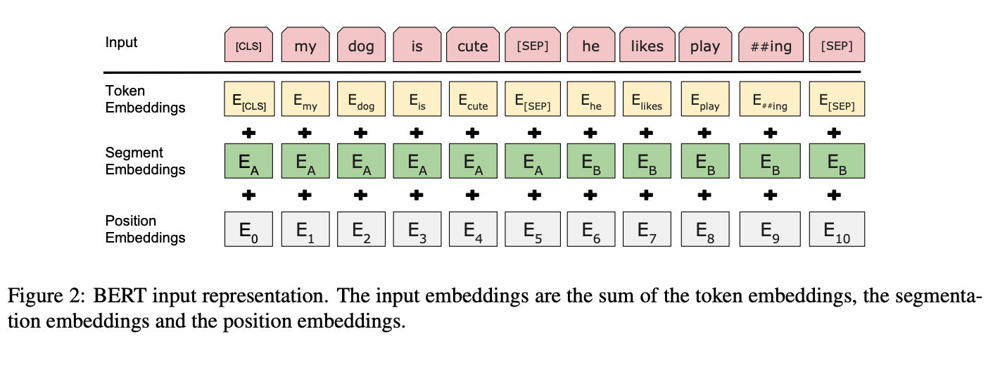

The BERT training is done in two macros: Pre-training and Fine-tuning. This is a look at Pre-training.
Before getting to Pre-training though, I want to cover the Input/Output representations. The input representation for the model was chosen so they could flexibly address a number of NLP tasks, being able to unambiguously define both a single sentence and a pair of sentences with a separator. This is important for a language model, because it needs to be able to reason at the connection between sentences.
Each sequence always starts with the special classification token [CLS]. This is used downstream also for the vector used in classification tasks (ie Correct-Next-Sentence or Not).
Each sequence is modeled using WordPiece embedding with a 30k token vocab. Sentence pairs are packed together in two ways: first, separated by [SEP] token, second by the added learned embedding to every token differentiating between sentence A and B.
BERT’s input representation is shown in Fig2 below.

Pre-training
Task #1: Masked LM
BERT has an advantage because it is ready to accept the masked tokens because of the parallel architecture. Thus BERT is trained with a deep bidirectional representation by simply masking some percentage (15%) of the input tokens at random, then lean on the prediction of those masked tokens. This masked process is referred in literature as a Cloze task, but here they refer to it as a “masked LM” (MLM). The final hidden vectors corresponding to the mask tokens are fed into an output softmax over the vocabulary.
Although the [MASK] token allows for a bidirectional pre-trained model, a downside, is the mismatch of pre-training and fine-tuning because the [MASK] token does not appear in normal language. Thus they use some techniques to mitigate this issue.
Task #2: Next Sentence Prediction (NSP)
Many important downstream tasks require an understanding of the relationship between sentences, not just the relationship of words within a sentence. Thus the second part of pre-training involves training a binarized next sentence prediction task that can be trivially generated from any monolingual corpus. Thus they train on a collection of sentence pairs, some which occur consecutively in a document while others do not, and the model is trained on if sentence B is classified as IsNext or NotNext.
Pretraining data
BERT is pre-trained with both BooksCorpus (800M words) and English Wikipedia (2.5B words). BERT requires the document-level corpus in order to train with NSP.